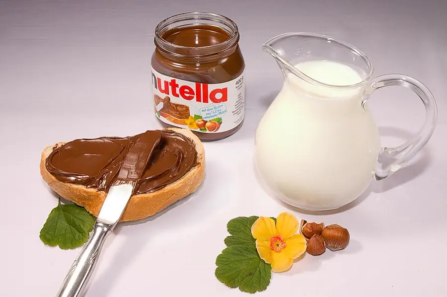

대표 로고대표 브랜드 마크
대표 로고대표 브랜드 마크누텔라 Nutella
누텔라(Nutella)는 설탕을 넣은 헤이즐넛 코코아 스프레드를 만드는 이탈리아 브랜드이다. 이탈리아 기업 Ferrero가 제조하며 1964년에 출시했다.
최종 업데이트
누텔라는 어떤 브랜드인가
누텔라는 설탕을 넣은 헤이즐넛 코코아 스프레드로, 이탈리아 기업 Ferrero가 제조한다. 많은 나라에서 '헤이즐넛 크림'으로 판매되며, 이탈리아 법에 따르면 최소 코코아 고형분 기준을 충족하지 못해 '초콜릿 크림'으로 표기할 수 없다.
주원료는 설탕과 팜유로 합쳐서 50%를 넘고, 헤이즐넛 13%, 지방을 줄인 코코아 가루 7.4%, 탈지유도 들어간다. 220g 병 하나에 헤이즐넛이 약 50개 들어가며, Ferrero는 전 세계 헤이즐넛 공급량의 25%를 사용하지만 모두 누텔라에만 쓰이는 것은 아니다.
1964년 출시 직후 즉각적인 성공을 거두었고, 1983년 미국에 처음 출시되었다. 2026년 4월에는 출시 이후 첫 신규 맛인 Nutella Peanut을 발표했다.
누텔라는 어떻게 시작되고 성장했나
Pietro Ferrero는 헤이즐넛 생산으로 알려진 이탈리아 소도시 Alba에서 제과점을 운영했고, 1946년 gianduja에서 유래한 Pasta Giandujot의 300킬로그램 첫 물량을 판매했다. 처음에는 고체 덩어리로 팔렸으나 Ferrero는 1951년 부드럽게 펴 바르는 버전을 Supercrema gianduja라는 이름으로 판매하기 시작했다.
1963년 Pietro의 아들 Michele가 Francesco Rivella와 함께 유럽 전역 판매를 목표로 Supercrema gianduja를 개량했고, 배합을 바꾸면서 이름을 Nutella로 바꿨다. 첫 병은 1964년 4월 20일 Alba 공장에서 출고되었다.
누텔라의 세계적 확산은 이탈리아의 전후 경제 호황기에 이루어졌다.
누텔라의 브랜드 아이덴티티는 무엇인가
Alba에서 gianduja 기반 제품을 개량해 탄생한 Ferrero의 헤이즐넛 코코아 스프레드로, 이탈리아에서는 초콜릿 크림으로 표기할 수 없는 제품이다.
누텔라의 대표 제품과 서비스는 무엇인가
누텔라는 설탕, 변성 팜유, 헤이즐넛, 코코아 가루, 탈지분유, 유청 분말, 대두 레시틴, 바닐린으로 만든다. 미국과 영국에서 판매되는 누텔라에는 대두 제품이 들어 있다.
제조는 카카오 열매에서 코코아 가루를 추출하는 단계로 시작하며, 전체 공정은 일반적인 초콜릿 스프레드 생산과 매우 비슷하다. 전통 Piedmont 레시피인 gianduja는 헤이즐넛 페이스트 약 71.5%와 초콜릿 약 19.5%를 섞은 것이며, 누텔라는 전후 배급제로 카카오 원료가 부족해진 Piedmont에서 개발되었다.
2026년 4월에는 첫 신규 맛인 Nutella Peanut이 발표되었다.
누텔라는 지금 어떤 상태인가
2017년 11월 Ferrero는 레시피를 조금 바꿔 설탕과 탈지분유 함량을 늘렸고, 제품 색이 옅어지자 함부르크 소비자보호센터는 코코아 함량도 줄었을 것으로 추정했다. 2026년 4월 6일(EDT) Artemis II 달 근접비행 생중계에서 Integrity 우주선 내부를 떠다니는 누텔라 병이 포착되어 화제가 되었다.
4월 15일에는 신규 맛 Nutella Peanut을 발표했다.
누텔라 로고는 어떻게 변해왔나
대표 로고대표 브랜드 마크사진으로 보는 누텔라의 역사

자주 묻는 질문
누텔라는 어느 나라 브랜드인가요?
누텔라는 이탈리아의 식음료 브랜드입니다.
누텔라는 언제 설립되었나요?
누텔라는 1964년 설립되었습니다.
누텔라의 브랜드 아이덴티티는 무엇인가요?
Alba에서 gianduja 기반 제품을 개량해 탄생한 Ferrero의 헤이즐넛 코코아 스프레드로, 이탈리아에서는 초콜릿 크림으로 표기할 수 없는 제품이다.
누텔라의 대표 제품은 무엇인가요?
누텔라는 설탕, 변성 팜유, 헤이즐넛, 코코아 가루, 탈지분유, 유청 분말, 대두 레시틴, 바닐린으로 만든다.
누텔라는 현재 어떤 상태인가요?
2017년 11월 Ferrero는 레시피를 조금 바꿔 설탕과 탈지분유 함량을 늘렸고, 제품 색이 옅어지자 함부르크 소비자보호센터는 코코아 함량도 줄었을 것으로 추정했다.
누텔라의 공식 웹사이트는 어디인가요?
누텔라의 공식 웹사이트는 https://www.nutella.com 입니다.
출처와 검증
누텔라 관련 참고: 공식 웹사이트 · 위키데이터 Q212193 · 한국어 위키백과 · 영어 위키백과. 브랜드명은 한글과 원어를 함께 표기하되 데이터에 없는 표기는 만들지 않습니다. 기원 국가·설립연도는 검수된 정의문에서 확인된 값을 우선하고, 없을 때만 공식 웹사이트 URL이 일치하는 위키데이터 개체의 값을 씁니다. 위키데이터 값은 2026-11-07 기준입니다.